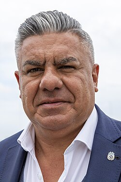

Claudio Fabián Tapia (Concepción, San Juan, 22 de septiembre de 1967), apodado el Chiqui, es un dirigente deportivo de fútbol argentino. Actualmente se desempeña como presidente de La Asociación del Fútbol Argentino y como presidente de la Liga Profesional de Fútbol Argentino. También fue presidente del Club Atlético Barracas Central desde el 27 de junio de 2001 hasta el 26 de marzo de 2020.

Hijo de Washington Tapia y Leonor Olivera, está casado con Paola Moyano, hija de Hugo Moyano, con quien tiene cuatro hijos. Llegó a Buenos Aires desde San Juan cuando era pequeño junto a su familia. Estudió en el barrio de San Telmo y vivió en su infancia y adolescencia en el barrio porteño de Barracas. Jugó en las inferiores de Independiente y luego en el Club Atlético Barracas Central como delantero, en donde llegó a jugar en la primera división de ese club. Tiempo más tarde, jugó en el Club Sportivo Dock Sud. Luego de su corta carrera como futbolista, comenzó a trabajar en el Sindicato de Camioneros.
En el año 2000 un grupo de socios lo invitó a volver al club a ver al equipo. En junio de 2001 asumió como presidente del club en un momento institucional muy complicado para Barracas Central. Así comenzó su carrera como dirigente deportivo. En la Asociación del Fútbol Argentino fue integrante de la mesa de la divisional Primera C y luego Presidente de la categoría. Tuvo un breve lapso en que fue DT y dirigió al primer equipo. En 2004 Barracas Central perdió el ascenso en una final con Argentino de Rosario. Reconstruyó social y ediliciamente con obras al club. En 2010 Barracas consigue el segundo logro deportivo bajo su presidencia (había ganado el Torneo Apertura 2003) y asciende de la Categoría C a la Primera B Metropolitana. En 2019 Barracas obtuvo un nuevo ascenso, en esta ocasión a la Primera B Nacional. Finalizó su mandato el 26 de marzo de 2020 luego de haber dirigido el club por más de 18 años, siendo reemplazado por su hijo Matías.
Fue integrante del Comité Ejecutivo de AFA por Primera C y miembro titular de la mesa divisional de Primera B. Esto le permitió transformarse en miembro del Comité Ejecutivo de AFA y ser nombrado Secretario de Torneos de la AFA. Fue galardonado como dirigente destacado en los Premios Alumni por la Primera C y, en dos ocasiones, como dirigente de Primera B. En 2015 es nombrado Vicepresidente segundo de la Asociación del Fútbol Argentino y se convierte en candidato a Presidente de dicha Asociación. En 2015 acompaña al seleccionado argentino de fútbol a las giras por Estados Unidos, China, Italia y a la Copa América de Chile. En 2016, preside la delegación que disputó la Copa América Centenario en Estados Unidos. El 29 de marzo de 2017 es nombrado Presidente de la AFA en una elección con 40 votos a favor y 3 abstenciones. El 10 de abril de 2017, tras varias semanas de incertidumbre, anunció el despido del técnico Edgardo Bauza al frente de la selección, siendo su reemplazante Jorge Sampaoli. El 15 de julio de 2018, tras los malos resultados en la Copa Mundial de Rusia de 2018, Sampaoli es despedido de la selección argentina. Tras la ida de Sampaoli, Lionel Scaloni asume como director técnico interino. Luego de seis partidos, en los que obtuvo buenos resultados (4 victorias, 1 empate y 1 derrota), pasa a ser formalmente el técnico titular de la selección argentina. En 2021 la selección salió campeona de la Copa América en Brasil. El 1 de junio de 2022, la selección obtuvo la Finalissima al vencer 3-0 a la selección de Italia (campeona de Europa). El 18 de diciembre de 2022, luego de 36 años, la selección nacional conquistó la Copa del Mundo en Catar tras vencer a Francia por penales. En 2024 el seleccionado nacional ganó su decimosexta Copa América en Estados Unidos.